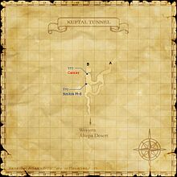
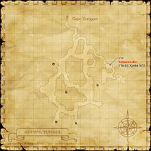
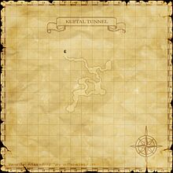
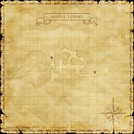

Description
Kuftal Tunnel is a dungeon in Vollbow.
Map

Involved in Quests / Missions
| Quest / Mission | Type | Starter | Location |
|---|---|---|---|
| Borghertz's Loyal Hands | AF (SAM) | Guslam | Upper Jeuno (H-8) |
| Knight Stalker | AF (DRG) | Rahal | Chateau d'Oraguille (H-9) |
| The Kuftal Tour | General | Datta | Rabao (F-7) |
| The Potential Within | Weapon Skill (Great Katana) | Jaucribaix | Norg (K-8) |
| The Promise | General | Kohlo-Lakolo | Port Windurst (G-5) |
| True Will | AF (NIN) | Ryoma | Norg (H-8) |
NPCs
| Name | Location | Type |
|---|---|---|
| Hawk Nose | — | Quest NPC |
Notorious Monsters
| Name | Level | Drops | Steal | Family | Spawns | Notes |
|---|---|---|---|---|---|---|
| Amemet | 66 | Lizard Egg Lizard Skin Lizard Tail Amemet Skin | — |  LizardsImage source LizardsImage source | — | Lottery Spawn; A, L |
| Arachne | 69 | Arachne Web | — |  SpidersImage source SpidersImage source | — | Lottery Spawn; A, L, H |
| Bloodthirster Madkix | 69-72 | Acha d'Armas Goblin Helm Goblin Mail Gold Beastcoin | — |  GoblinsImage source GoblinsImage source | — | Lottery Spawn; A, L, S |
| Cancer | 65 | Rock Salt Crab Shell Land Crab Meat Arondight | — |  CrabsImage source CrabsImage source | — | Forced Spawn; H |
| Guivre | 82-83 | Guivre's Skull Wyvern Scales Wyvern Skin Wyvern Wing | — |  WyvernsImage source WyvernsImage source | — | Timed Spawn; A, S |
| Pelican | 80-81 | Astral Aspis Cockatrice Meat Cockatrice Skin | — |  CockatriceImage source CockatriceImage source | — | Lottery Spawn; A, S |
| Phantom Worm | 70-72 | Adaman Ore Darksteel Ore Phantom Tathlum Silver Ore | — |  WormsImage source WormsImage source | — | Forced Spawn; A, L, H |
| Sabotender Mariachi | 68-70 | Bano Del Sol Cactuar Needle Cactuar Root Cactus Stems | — |  SabotendersImage source SabotendersImage source | — | Lottery Spawn; A, L, H |
| Yowie | 69-71 | Raptor Skin Yowie Skin | — |  RaptorsImage source RaptorsImage source | — | Lottery Spawn; A, L, H |
Regular Monsters


Event Monsters
| Name | Level | Drops | Steal | Family | Spawns | Notes |
|---|---|---|---|---|---|---|
| Dervo's Ghost | 68-68 | — | — |  GhostsImage source GhostsImage source | 1 | Spawned Mission: Enter the Talekeeper; A, H, HP |
| Gizerl's Ghost | 68-68 | — | — | GhostsImage source | 1 | Spawned Mission: Enter the Talekeeper; A, H, HP |
| Gordov's Ghost | 68-68 | — | — | GhostsImage source | 1 | Spawned Mission: Enter the Talekeeper; A, H, HP |
| Kettenkaefer | — | — | — |  BeetlesImage source BeetlesImage source | 1 | Spawned Quest: The Potential Within; A, S, Sc |
 MimicImage source MimicImage source | — | — | — | Mimics | — | Failed coffer pick |
Maps


EXP camps
Arrival and hazards
Desert entrance book. Use nearby crab and lizard rooms; avoid Guivre and deeper high-level targets.
References
External references describe their own server or retail rules. Documented Zenith changes take precedence.
Map credits: Map 1 — HorizonXI Wiki · Map 2 — HorizonXI Wiki · Map 3 — HorizonXI Wiki · Map 4 — HorizonXI Wiki. Original game maps © SQUARE ENIX; redrawn maps retain the credited authorship and license.


Additional level-75 reference
|
This tunnnel connects the Western Altepa Desert section of Zepwell Island with Cape Teriggan. This maze of underground passageways can lead adventurers in circles, only to look up in horror as giant monsters such as Guivre look down on them with glee. Connecting Areas
Involved in Quests/Missions
NPCs Found Here
|
    |


Coffer/Chest Contents
|
Weather
Fishing
| ||||||||||||||||||||||||||

Notorious Monsters Found Here
| Name | Level | Drops | Steal | Family | Spawns | Notes |
|---|---|---|---|---|---|---|
| Amemet | 66 - 66 | Lizards | 1 | |||
| Arachne | 69 - 69 | Spiders | 1 | A, L, H | ||
| Bloodthirster Madkix | 69 - 72 | Goblins | 1 | A, L, S | ||
Cancer
|
65 - 65 | Crabs | 1 | H | ||
Dervo's Ghost
|
68 - 68 | Ghosts | 1 | A, H, HP | ||
Gizerl's Ghost
|
68 - 68 | Ghosts | 1 | A, H, HP | ||
Gordov's Ghost
|
68 - 68 | Ghosts | 1 | A, H, HP | ||
| Guivre | 82 - 83 | Wyverns | 1 | A, S | ||
Kettenkaefer
|
Unknown | Beetles | 1 | A, S, Sc | ||
Mimic
|
Unknown | Mimics | ||||
| Pelican | 80 - 81 | Cockatrices | 1 | A, S | ||
Phantom Worm
|
70 - 72 | Worms | 1 | A, L, H | ||
| Sabotender Mariachi | 68 - 70 | Sabotenders | 1 | A, L, H | ||
| Yowie | 69 - 71 | Raptors | 1 | A, L, H | ||
HP = Detects Low HP; M = Detects Magic; Sc = Follows by Scent; T(S) = True-sight; T(H) = True-hearing JA = Detects job abilities; WS = Detects weaponskills; Z(D) = Asleep in Daytime; Z(N) = Asleep at Nighttime | ||||||
Mobs Found Here
| Name | Level | Drops | Steal | Family | Spawns | Notes |
|---|---|---|---|---|---|---|
Air Elemental
|
68 - 70 | Elementals | 9 | A, M | ||
| Cave Worm | 60 - 63 | Worms | 20 | L, H | ||
| Deinonychus | 65 - 68 | Raptors | 26 | A, H, Sc | ||
| Devil Manta | 66 - 68 | Sea Monks | Fished Up | |||
| Diplopod | 68 - 71 | Scorpions | 3 | A, H, Sc | ||
Fire Elemental
|
68 - 70 | Elementals | 9 | A, M | ||
| Goblin Alchemist | 66 - 69 | Goblins | 6 | A, L, S | ||
| Goblin Bandit | 66 - 69 | Goblins | 6 | A, L, S | ||
| Goblin Mercenary | - 69 | Goblins | 7 | A, L, S | ||
| Goblin Tamer | 66 - 69 | Goblins | 5 | A, L, S | ||
| Greater Cockatrice | 78 - 80 | Cockatrices | 16 | A, S | ||
| Haunt | 63 - 66 | Ghosts | 10 | A, H, HP | ||
| Kuftal Digger | 66 - 69 | Worms | 12 | L, H | ||
| Ladon | 80 - 82 | Wyverns | 4 | A, S | ||
| Ovinnik | 77 - 79 | Tigers | 16 | A, S, Sc | ||
| Recluse Spider | 63 - 66 | Spiders | 28 | A, L, H | ||
| Robber Crab | 60 - 63 | Crabs | 62 | A, H | ||
| Sabotender Sediendo | 64 - 67 | Sabotenders | 16 | A, H | ||
| Sand Lizard | 61 - 64 | Lizards | 20 | L, H | ||
| Scavenger Crab | 60 - 62 | Crabs | Fished Up | |||
| Stygian Pugil | 64 - 66 | Pugils | Fished Up | |||
HP = Detects Low HP; M = Detects Magic; Sc = Follows by Scent; T(S) = True-sight; T(H) = True-hearing JA = Detects job abilities; WS = Detects weaponskills; Z(D) = Asleep in Daytime; Z(N) = Asleep at Nighttime | ||||||
Adapted from Eden Wiki: Kuftal Tunnel · Contributors and history · CC BY-SA 4.0. Revision 45917. Layout, links and optional background text adapted for Zenith.